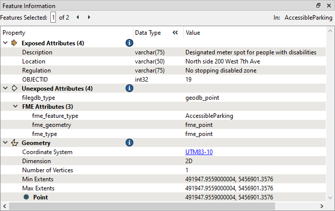
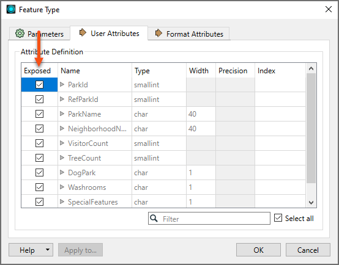

Learning Objectives
After completing this lesson, you'll be able to:
- Define user attribute.
- Define FME attribute.
- Distinguish between exposed and unexposed attributes.
- Identify why attributes might be renamed.
- Identify which transformer or transformers can be used for a particular attribute-managing task.
What Are Attributes?
FME Workbench supports two types of attributes:
User attributes are attributes with domain information about a feature, such as parcel_identifier, owner_name, and date_surveyed. User attributes are always part of the feature no matter which format they are stored in and hence persist when translating from one format to another. User attributes may come from a source dataset or may be created as needed within FME. Not all formats accept user attributes, and the ones that do sometimes put restrictions on them. Each user attribute is defined by its name, data type, width, and number of decimal places. FME uses the term user attribute when some relational databases might use the term column or field.
Format attributes are specific to a format's schema. Some examples are autocad_block_name and sde30_justification. FME does not generically support them and will change or be dropped when translated into a different format. In general, format attributes are designed for translations to and from the same format, although advanced users may find them helpful in writing to other formats when using customized workspaces.

Warning: avoid naming user attributes with the prefix fme_. FME may not recognize a user attribute prefixed with fme_ because FME uses this prefix to process many format attributes. Also, avoid naming user attributes with the same names as other format attributes to prevent similar conflicts.
A particular set of format attributes has the prefix fme_. These attributes represent the data as it is perceived by FME and are known as FME attributes. These attributes are often used by transformers; you will normally not set their values yourself. One common FME attribute that is worth knowing about is fme_feature_type, which stores the name of features' feature type.
User and format attributes are most visible when viewing a dataset in the Feature Information window.

Exposed and Unexposed Attributes
In the feature type dialog of a reader or writer, attributes can be Exposed or made "visible."

Exposed attributes from a reader feature type become part of the workspace, which means you can access them in transformers and set them to particular values. By default, user attributes are exposed because, in most cases, you will be primarily interested in working with those attributes in a workspace. Format attributes are usually unexposed; however, for advanced users, exposing format attributes allows a variety of special things to be done with formats, such as setting line thickness, creating entities, and setting particular bits or bytes. For more information, see Controlling Features with Format Attributes.
In addition to format attributes, unexposed attributes can originate from dynamic workflows or when working with JSON or XML data. For example, this article in the FME Community discusses dealing with attributes unknown to the schema in a dynamic workflow. Some transformers, such as XMLFlattener, have settings to expose attributes.
When viewing attributes in the Feature Information window, exposed attributes show their FME Data Types; unexposed attributes do not.
Learn more about how FME handles schema.
Manage Your Attributes
Many of the top 30 transformers are support transformers for managing attributes. These create new attributes, rename them, set values, and delete them.
An essential use for these transformers is to rename attributes for schema mapping.
The main attribute-management tasks and the transformers that can be used are as follows:
| Task |
Transformers |
| Create Attributes |
AttributeCreator, AttributeManager |
| Set Attribute Values |
AttributeCreator, AttributeManager |
| Remove Attributes |
AttributeKeeper, AttributeManager, AttributeRemover, BulkAttributeRemover |
| Rename Attributes |
AttributeManager, AttributeRenamer, BulkAttributeRenamer |
| Copy Attributes |
AttributeCopier, AttributeCreator, AttributeManager |
| Sort Attributes |
AttributeManager |
| Change Attribute Case |
BulkAttributeRenamer |
| Add Prefixes/Suffixes |
BulkAttributeRenamer
|
Understand the BulkAttributeRenamer. It changes the case - or adds suffixes/prefixes - to the attribute name, not the attribute value.
Many of these transformers can carry out similar operations, and you can see that the AttributeManager does so many tasks you can use it almost exclusively.
However, it's important to note that the AttributeManager is a general-purpose tool. Using transformers with more specific functions, e.g., the AttributeRenamer, can boost performance. The only time AttributeManager tends to be faster than individual function attribute transformers is when you need to undertake many different attribute transformations in a row. Then, the AttributeManager is more performant.
See this blog post by FME user Aurélien Chaumet for more information on attribute transformer performance.
For further reading, check out this article on Attribute Management on the Safe Software blog.
⭐ New in FME 2023: the AttributeManager and AttributeCreator transformers let you manage your attributes' data types. Check out this video to learn more.